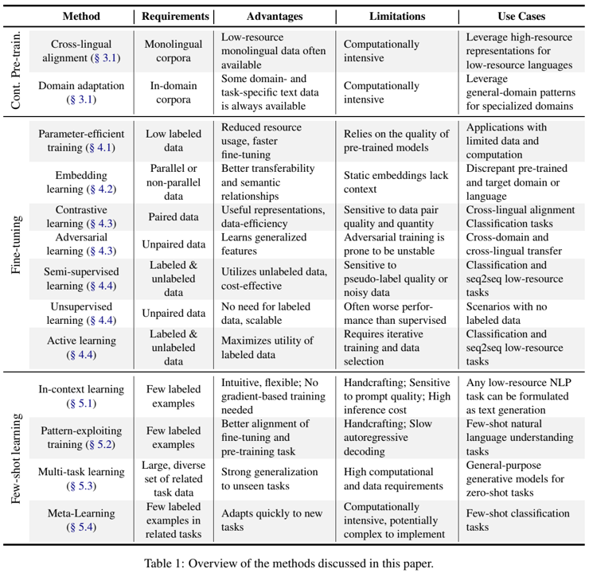
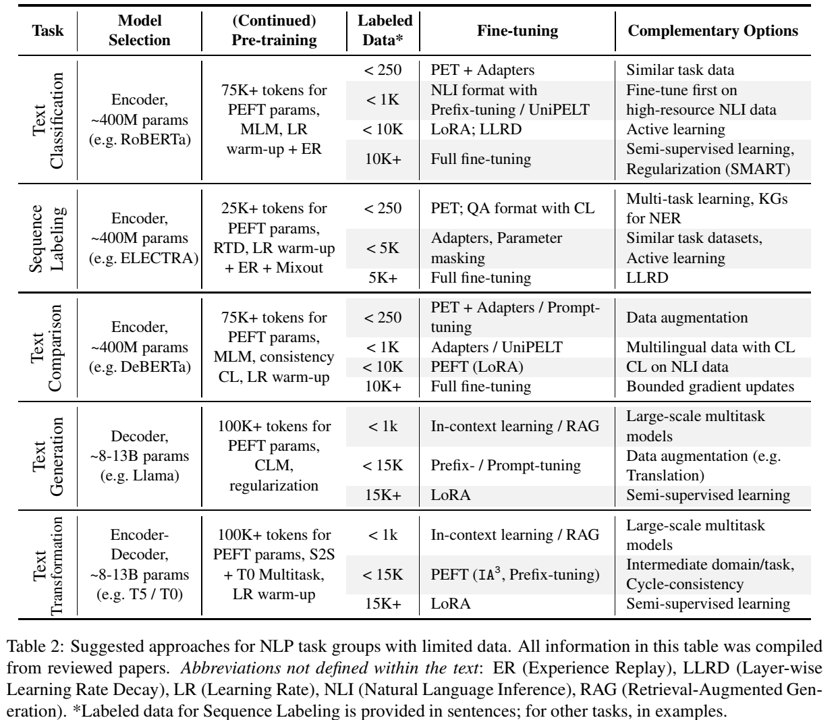

论文阅读二十二：有限数据微调语言模型实用指南
摘要
使用预训练大型语言模型（LLMs）已经称为自然语言处理（NLP）中的事实标准，尽管它们需要大量数据。受最近以有限数据训练LLM为重点的研究激增的启发，特别是在低资源领域和语言中，本文调查了最近的迁移学习方法，以优化数据稀缺的下游任务中的模型性能。我们首先解决初始化和持续的预训练策略，以更好地利用未知领域和语言的先验知识。然后，我们研究如何在微调和少样本学习过程中最大限度地利用有限的数据。最后一节从特定任务的角度，回顾了适用于不同数据稀缺程度的模型和方法。我们的目标是为从业者提供实用的指导方针，以克服数据受限带来的挑战，同时突出未来研究的有前景的方向。论文地址
引言
预训练语言模型（PLMs）正在改变NLP领域，显示出学习和建模来自复杂和多样化领域的自然语言数据底层分布的出色能力（Han等人，2021）。然而，他们的训练需要大量的数据和计算资源，这在许多现实世界场景中可能是令人望而却步的（Bai et al.，2024），尤其是对于英语以外的语言和专业领域，例如医学（Crema et al.，2023；Van Veen et al.，2021）、化学（Jablonka et al。，2019）。处理这一常见问题的主要方法依赖于迁移学习范式，该范式涉及对大量通用或混合领域数据进行自我监督的预训练阶段，然后对特定领域和任务的数据进行（可能是多个）领域自适应和微调或少次学习步骤。值得注意的是，这一过程的第二阶段也需要大量数据。数据稀缺会导致过拟合、泛化能力差和次优性能。在数据有限的情况下对PLM进行微调需要仔细选择预训练策略、域自适应和有效的参数优化，以通过有效利用模型已有的知识来避免灾难性遗忘，从而实现最佳性能（Kirkpatrick等人，2017；Ramasesh等人，2021）。本文通过探索迁移学习的最新进展，解决了在数据有限的情况下训练LLM的挑战，特别是对于低资源语言和专业领域（表1）。我们从Scopus、Web of Science、Google Scholar和ACL Anthology收集的2500多篇论文开始进行系统综述。它面向NLP的研究人员和从业者，概述了当前最先进的方法和在数据稀缺场景中优化模型性能的实用指南。我们研究了将LLM适应数据有限的特定任务和领域的过程，重点是（1）选择适当的（连续的）预训练方法，以便在手头的低资源场景中有效地利用先验知识（§3）；（2） 在微调（§4）和少样本学习（§5）过程中最大限度地利用有限数据；（3） 讨论各种迁移学习策略的假设、益处和局限性，突出研究人员面临的开放挑战；以及（4）针对具体任务的观点，以克服不同程度的数据稀缺，为从业者提供指导（§6）。

相关工作
最近的工作探索了各种策略，以提高PLM在数据稀缺场景中的性能，重点关注特定的任务、语言或领域（Yazar等人，2023；Krasadakis等人，2024；Laparra等人，2021）。我们全面概述了用于在有限数据下微调PLM的迁移学习方法，涵盖了各种策略和用例。可以说，数据增强是应对数据稀缺的最基本技术之一（Feng等人，2021）。然而，由于多样性有限和质量下降，对于低资源语言的专业领域来说，单独的数据增强可能是不够的或不切实际的（Chen等人，2023a；Stylianou等人，2023）。因此，本文侧重于以模型为中心的互补方法，更好地利用了可用数据。Treviso等人（2023）使用更广泛的资源效率定义来调查高效的NLP方法，包括数据、时间、存储和能量。Hedderich等人（2021）专注于低资源、有监督的NLP，包括远程监督和预训练编码器模型。相比之下，我们的工作采用了更实用的视角，以计算负担得起的方式对预训练模型的数据高效适应进行了结构化的概述，同时也考虑了特定任务的方面。
预训练
预训练是 LLMs 的初始基础训练阶段，使它们能够以自我监督的方式发展强大的通用和特定领域语言理解能力。这是 LLMs 即使在有限的标注数据下也能应对各种下游任务的关键成功因素之一（Radford 等人，2018 年）。
第一步是选择一个合适的模型架构（见§6），这直接涉及一些预训练目标的选项。这种选择需要与下游任务保持一致，以获得更好的可转移性。解码器模型最适合文本生成任务，并使用因果语言建模（CLM）目标（Brown等人，2020），该目标涉及在给定先前标记的情况下预测序列中的下一个标记。相比之下，编码器模型专注于分类任务，并采用某种形式的掩码语言建模（MLM）目标（Devlin等人，2019），其中对随机的标记子集进行掩码，并对模型进行训练以预测原始标记。这个目标对于学习双向表征特别有用。一种改进的变体，即替换标记检测（RTD），通过使用小型生成器网络替换输入标记显示出更好的收敛性（Clark等人，2020）。相反，编码器-解码器模型在文本转换任务中表现出色，并通过掩码或去噪序列到序列（S2S）预训练将掩码扩展到标记序列（Song等人，2019；Lewis等人，2020）。
持续预训练
从头开始训练模型在数据和计算资源方面往往是一个不可逾越的挑战。幸运的是，有越来越多的预训练模型可用于各种任务、语言和领域。持续预训练是一种强大的技术，它涉及有限数量的训练步骤，具有预训练目标和没有标签的窗口或下游任务数据（Gururangan等人，2020）。目标是弥合预训练数据与目标领域和语言之间的差距，从而提高下游任务的性能（Imani等人，2023）。持续预训练是一种功能强大的技术，它涉及数量有限的训练步骤，包括预训练目标和无标签的非领域或下游任务数据（Gururangan 等人，2020 年）。其目的是缩小预训练数据与目标领域和语言之间的差距，从而在下游任务中取得更好的成绩（Imani 等人，2023 年）。如果原始模式和目标模式之间存在相当大的差异，它允许我们用以前看不见的术语和短语扩展模型词汇表（Gnehm等人，2022）。值得注意的是，通过后续预训练，可以以自我监督的方式高效地重复使用标注的微调数据。一般来说，这种模型适应容易发生灾难性遗忘（Kalajdzievski，2024），需要在训练长度、数据大小和模型大小之间保持谨慎的平衡，并从额外的正则化中受益（§4）。值得注意的技术包括学习率预热（McCloskey和Cohen，1989）和经验回放（de Masson d’Autume等人，2019）。
对于解码器模型，单次预训练的模型大小与数据量之间的关系已被广泛探索，结果表明，数据需求巨大，模型大小和数据的比例大致相等（Kaplan 等人，2020 年；Hoffmann 等人，2022 年）。然而，这些关系如何转移到持续的预训练仍然是一个具有挑战性的悬而未决的问题。在数据稀缺的情况下，Muennighoff等人（2023a）发现，训练解码器长达16个轮次仍然可以获得有意义的收益。Gnehm等人（2022）证实了编码器模型的这一点，表明在较小的领域内语料库上继续进行预训练可以从更长的训练时间中受益。除了对整个模型进行持续的预训练外，一种有效的替代方法是只训练模型参数的一个子集（§4.1）。这种方法可以更好地平衡模型容量和数据大小，并有助于在适应新任务和领域的同时保留先验知识（Liu等人，2022；Jukic和’Snajder，2023）。
跨语言对齐。跨语言对齐模型可以增强其跨语言能力，并在多语言环境中实现更好的性能。最简单的方法在来自不同语言的非配对单语语料库上训练，并且已经为模型配备了显著的多语言和跨语言迁移能力（Conneau和Lample，2019；Pires等人，2019；Muennighoff等人，2023b）。特别是，类型学上不同的、遥远的语言和那些在训练前语料库中存在较少的语言从随后的自我监督训练中受益，可能会使用扩展的词汇来提高跨语言表现（Lauscher等人，2020；Blevins和Zettlemoyer，2022）。在高资源和低资源语言之间进行统一采样的持续MLM预训练可以提高低资源语言的性能，同时在高资源语言上保持性能（Imani等人，2023）。有趣的是，Alabi等人（2022）在调整具有数亿个参数的MLM目标的编码器模型时显示了多语言诅咒的影响（Conneau等人，2020）：**分别适应每种语言的模型比训练单个多语言模型得分更高。**即使是少量的并行数据（例如翻译）也为学习更好的跨语言表示开辟了广泛的可能性。翻译语言建模（TLM）目标预测连接句子对中的掩码标记，学习理解跨语言的上下文（Conneau和Lample，2019）。另一种选择是屏蔽源语言句子中的标记，并要求模型预测目标语言中的匹配句子（Wang等人，2023a）。
领域自适应。将预训练模型适应专门的领域，可以确保它们能够有效地处理特定领域的任务，特别是当专门领域的语言和词汇与预训练语言有很大不同时（Gururangan等人，2020）。许多领域都有大量适用于领域的语言模型，例如生物医学（Luo et al.，2022；Bressem et al.，2024）、法律（Noguti et al.，2023）、金融（赵et al.，2021）和科学（Beltagy et al.，2019）。领域自适应在相对少量的精心选择的数据下效果良好（Gnehm等人，2022）。它可能比将有限的领域特定数据与一般数据结合，并从头开始的训练更有效（Türkmen等人，2023）。与仅对域内数据进行微调相比，它还对看不见的数据表现出更好的泛化能力（Bai等人，2021）。在没有足够未标记数据的低资源环境中，使用类似的域内语料库进行持续的预训练可以提高性能（Jantscher等人，2023），但数据的质量和相关性与其数量同样重要（Mahapatra等人，2022）。Lu等人（2023）表明，专注于领域特定词汇的RTD目标优于随机掩蔽。结合对抗性领判别别器可以进一步增强编码器和解码器模型的域自适应（Du等人，2020；Bellegarda，2023）。在参数有效方法的情况下（§4.1），对新引入的参数进行预训练可以进一步提高性能（Liu等人，2022；Jukic和Snajder´，2023）。对于跨域设置，将原始预训练数据与域内语料库相结合可以进一步提高鲁棒性（Diao等人，2023）。
微调
在低资源场景中微调PLM会带来过拟合和不稳定优化等挑战，因为与巨大的模型容量相比，数据量有限，这阻碍了对未知示例的泛化。
灾难性遗忘缓解。为了有效地用小数据微调更深层次的transformer模型，适当的优化和正则化技术至关重要（Kalajdzievski，2024）。Zhang等人（2021）探讨了训练长度和重新初始化较高层的不同数量对BERT微调的影响。Xu等人（2021a）提出了一种基于输入的权重缩放策略，以稳定训练并加速低数据深度模型的收敛。他们还实证表明，大批量对小数据集的泛化有负面影响。分层学习率衰减（LLRD）将更高的学习率应用于网络的更深层次，目的是从预训练的网络中保留更一般的信息，并在最后一层学习特定任务的信息（Howard和Ruder，2018）。正则化策略通过鼓励参数保持接近其预训练值来减轻灾难性遗忘。预训练权重衰减对所有参数施加约束（Wiese等人，2017），而Mixout（Lee等人，2019）用预训练权重随机替换模型的一些权重。SMART（Jiang等人，2020a）结合了平滑诱导对抗正则化，以增强对小扰动的鲁棒性，并结合了Bregman近点优化，以避免在信任区域外进行激进的参数更新。除了优化和正则化之外，结合外部知识也是非常有效的。Phang等人（2019）提出，在转向数据有限的目标任务之前，首先对更大的中间任务进行微调。
参数高效训练
对PLM中的整个参数集（数百万或数十亿）进行微调是低效的，在低资源环境中可能不稳定（Dodge等人，2020）。参数高效微调（PEFT）方法仅更新一组减少的权重，避免了高昂的计算成本。它们在数据稀缺的情况下特别有用，因为它们减轻了与完全重新训练相关的灾难性遗忘的风险。此外，一些方法甚至设法仅用一小部分参数来匹配完全微调的性能（Hu等人，2021；Lester等人，2021，Liu等人，2022；Jukic和Snajder´，2023）。
基于掩码的方法 不添加额外的参数，只训练模型权重的一个子集（特定层、参数类型等），同时保持其余部分不变。早期的工作只是在编码器模型之上训练（额外的）最后一层（Devlin等人，2019）。BitFit（Ben Zaken等人，2022）调整了模型的偏差项，使其高效。另一项工作侧重于基于梯度信息的子网优化，要么在训练前选择一个固定的子网（Xu等人，2021b；Ansell等人，2022），要么使用多阶段优化策略在训练时自适应地选择它（Zhang等人，2022；Yu等人，2023）。基于掩码的方法高效且易于实施；然而，与添加新的可训练参数的其他PEFT方法相比，它们往往表现不佳（Liu等人，2022；Mao等人，2022）。
适配器 是可训练的轻量级前馈模块，注入transformer层之间，而模型的其余部分是固定的（Houlsby等人，2019；Pfeiffer等人，2020）。顺序适配器是模型中的瓶颈，与其他PEFT方法相比，需要更宽的层和更多的参数来保持性能（Hu等人，2023b）。Compacter（Karimi Mahabadi等人，2021）通过利用低秩矩阵和参数共享缓解了这一问题。适配器减少了训练时间和内存消耗，但由于额外的模型深度，对推理时间产生了负面影响（Rücklé等人，2021年）。并行适配器（He等人，2021）和梯形边调谐（Sung等人，2022）通过将可学习模块与骨干模型并行结合来缓解这一问题。多个适配器也可以灵活组合，以模块化的方式处理复杂的任务（Pfeiffer等人，2021；Wang等人，2022；Chronopoulou等人，2023）。
前缀调优 建立在上下文学习的基础上，但它 不是寻找离散的标记，而是优化连续嵌入，作为模型的特定任务上下文。具体而言，该方法将学习到的标记向量预先添加到每个transformer块中多头注意力层的输入键和值中，作为要关注的虚拟标记（Li和Liang，2021）。 引入学习向量来缩放注意力机制和前馈网络中的键和值，显示出性能的提高（与适配器相当），参数增加了一个数量级（Liu等人，2022）。提示调优（Lester等人，2021）通过将前缀限制在输入嵌入中进一步减少了参数的数量。这种方法在非常大的模型尺寸（数十亿个参数）下具有竞争力，并且收敛速度较慢（Mao等人，2022）。总体而言，前缀调优提供了一种灵活有效的方法来适应跨域和跨语言低资源场景中的模型（Tu et al.，2024；Goswami et al.，2023；赵et al.，2022），其参数比适配器或重参数化方法少得多。
重新参数化方法 的灵感来自LLM参数位于低维流形上的观察。内在SAID（Aghajanyan等人，2021）研究了内在维度，并将加性权重矩阵投影到这个子空间中。同样，LoRA（Hu等人，2021）将权重矩阵分解为两个低秩矩阵的乘积，在不影响太多性能的情况下显著减少了参数数量。KronA（Edalati等人，2022）取代了Kronecker分解，并显示出更好的下游性能。重新参数化方法最适用于大型权重矩阵，因此也适用于具有中等或更多数据量的大型模型（Van Veen等人，2023）。
混合方法 结合了多种PEFT方法，以利用其各自的优势。UniPELT（Mao等人，2022）使用门控机制动态激活适配器、前缀调优和LoRA，以优化给定任务和数据设置的性能。Chen等人（2022a）引入了设计空间来参数化层分组、可训练参数分配和PEFT策略选择。
嵌入学习
嵌入向量是NLP任务中输入标记的数值表示。它们对于LLM在下游任务中的成功至关重要，使模型能够捕获输入文本的语义信息，包括特定语言、领域和任务的细微差别（Collobert等人，2011）。然而，语言模型仅限于由固定粒度的标记化阶段产生的预定义词汇表。选择粒度意味着在时间和空间复杂性方面进行权衡。字级粒度更具表现力，但需要更大的词汇量和更多的内存，而字符或字节级粒度更节省空间，但表现力较低，会产生很长的序列（Bojanowski等人，2017；Ruder等人，2023）。作为折衷方案，大多数模型使用子字级粒度（subword），这通常是两者之间的良好平衡（Kudo和Richardson，2018）。最佳粒度取决于任务和语言。固定的词汇表对小的文本扰动很敏感，并限制了对新任务和领域的泛化。 为了解决这个问题，Sun等人（2023）提出训练一个浅层transformer从字符中学习单词表示，使其对拼写错误和域转换具有鲁棒性。最近的工作使用冻结的transformer架构训练标签机嵌入，以解决预训练域和目标域与语言词汇之间的差异（Artetxe等人，2020；Hung等人，2023）。这种方法比完全微调更有效，可以作为中间训练步骤。或者，Nag等人（2023）根据标记嵌入的熵识别易受碎片化影响的单词，并用这些单词的新嵌入来扩充词汇量。增强跨语言迁移的另一种方法是使用并行数据或种子字典将不同语言的嵌入映射到共享空间中（Mikolov等人，2013；Lalrempuii和Soni，2023）。以这种方式利用高资源语言嵌入对低资源下游任务非常有益（Minixhofer等人，2022；Deshpande等人，2022年；Deb等人，2023年）。其他研究通过配对数据上的对齐训练目标建立了隐式映射（Cao等人，2019；Saadi等人，2022）。
对比学习和对抗学习
对比和对抗学习方法从语言和领域之间的差异和相似性中提取有意义的信息，增强模型的一致性和适应性。
对比学习（CL）旨在通过将语义上紧密的配对拉到一起并推开无关的样本来学习有效的表征（Chen等人，2020b）。它通常需要并行数据，并且可以在多个粒度级别上发生：句子（Chi等人，2021a）和单词（Chi等人，2021b；Chen等人，2023b）。对齐与跨不同语言和模型的跨语言迁移显著相关（Gaschi等人，2023），仅在源语言中使用标记示例在下游任务中取得了显著的性能（Hu等人，2023a；Kowsher等人，2023年）。许多其他工作强调了对比跨语言性与衔接等PEFT方法的协同作用（Liu等人，2023b，A；Ahmat等人，2023）。除了跨语言对齐外，CL在下游任务级别也有利于更好地利用数据。对于文本相似性任务，它可以通过使用数据增强技术生成正对来充当无监督目标（Gao等人，2021b；Yan等人，2021）。通过锚定到类的文本描述（Pauli等人，2023）或重新表述为问答（QA）任务（Chen等人，2023c），可以很容易地为二元分类任务（如机器生成的文本检测（Liu等人，2023e））和其他分类任务（如情绪分析或命名实体识别（NER））创建CL对。
对抗学习 是指同时训练两个目标相互矛盾的模型，引导彼此取得更好的成绩（Goodfellow等人，2014）。对抗训练可以在没有任何配对数据的情况下帮助弥合预训练和目标领域或语言之间的差距。关键机制是训练一个需要被模型欺骗的语言或领域判别器，迫使它学习领域不变（Du等人，2020；Grießhaber等人，2020）或语言无关（Lange等人，2020，Huang等人，2023c）的鲁棒表示。这也可以与PEFT方法相结合，如适配器（Ngo Trung等人，2021）或特定于或独立于领域的学习前缀（赵等人，2022）。
有限监督
在低资源场景中，半监督、无监督和主动学习方法可以成功地利用未标记的数据来提高模型的泛化能力和鲁棒性。
半监督学习 （SSL）在训练过程中利用标记和未标记的数据（Chapelle等人，2009）。一种常见的方法是自我训练，即在有标签数据上训练模型，然后将其在无标签数据上的预测视为伪标签，以进行额外训练，主要基于模型置信度 (Schick andSchütze，2021a；Wang 等人，2023b；Lalrempuiiand Soni，2023) 或熵 (Chen 等人，2020a)。然而，为了避免确认偏差，适当的正则化是必不可少的（Toivanen等人，2022）。与标准方法不同，一致性正则化促进了对扰动输入的稳定预测（Sohn等人，2020；Xie等人，2020，Li等人，2019）。另一种常见的SSL方法是联合训练，其中多个模块在输入数据的不同视图上进行训练，并相互预测伪标签，或者需要就最终预测达成一致（Clark等人，2018；Bhattacharjee等人，2020）。SSL在迁移学习方法中特别有用，语言模型可以从预先训练的知识中获益，并为目标任务生成更好的伪标签。
无监督方法 仅使用未标记的数据训练模型，这使得它们在标记数据稀缺或不可用的情况下特别有用。PLM成功的最突出的例子和关键因素是其自我监督的预训练目标（第3节），该目标也可用于适配器等PEFT模块的预训练（Diao等人，2023）。另一方面，在微调过程中，无监督方法利用了某种形式的一致性条件。除了涉及扰动输入的一致性正则化（§4.4）外，还可以使用循环一致性来描述不同模态之间的关系（Zhu等人，2017）。需要未经处理的数据来学习潜在不同域（Karisani，2022；Buehler，2023）、语言（Lample等人，2018；Ren等人，2019）甚至文本样式（Jalota等人，2023）之间的双向关系。在实践中，无监督目标需要大量未标记的数据来学习数据分布的有意义表示。因此，他们经常与直接监督相结合，以提高性能。
主动学习（AL）技术侧重于选择信息量最大的数据点，以最大限度地提高有限训练数据的有效性。这种方法假设了一种特殊的情况，即数据未标记，注释预算受限，这种情况在现实世界的应用中很常见（Ren等人，2021）。通过置信度得分、熵、蒙特卡洛丢弃和困惑度等指标来表示模型的高度不确定性是最突出的数据采样标准（Lewis andGale，1994；Gal and Ghahramani，2016；Houlsbyet al.，2011；Yuan et al.，2020；Muradoglu andHulden，2022；Jantscher et al.，2023）。这些可以与基于多样性的采样策略相结合，基于数据分布相似性或梯度方差，以确保平衡的数据表示并减少异常值（Sener和Savarese，2018；Gissin和Shalev-Shwartz，2018；Ash等人，2019；Ein-Dor等人，2020；Margatina等人，2021；Karamcheti等人，2021，François和Gay，2023）。
使用AL训练模型是一个迭代过程，其中根据逐步细化的模型选择一小批未标记的样本进行注释。在回合之间重新初始化模型比用新数据增量更新模型更稳定，特别是对于代表性不足的类别（Lemmens和Daelemans，2023）。对于冷启动问题，随机抽样的替代方法是使用自监督目标作为不确定性的替代品（Yuan等人，2020）。将AL与适配器和UniPELT等PEFT技术集成在一起，在提高低资源任务的性能方面取得了可喜的成果（Jukic和Snajder，2023）。总体而言，AL策略允许模型从有限的数据中高效学习，减少注释负担，并根据任务复杂性进行调整。
少样本学习
在少样本学习中，模型只给出了新任务的有限示例，必须推广到看不见的数据。本节涵盖了对目标数据进行微调和不进行微调的方法。
上下文学习
随着能够从大量文本数据集中隐式吸收大量任务的大型解码器模型的兴起，上下文学习（ICL）或提示已成为利用这些模型泛化能力的流行方法（Liu等人，2023c）。在CLM预训练之后，会话模型通常通过强化学习与用户意图保持一致，以提高有用性、准确性和安全性（Ouyang等人，2022）。这使得模型只需几个例子就能处理新任务，而无需昂贵的基于梯度的训练（Petroni等人，2019；Radford等人，2019年；Brown等人，2020年）。此外，ICL甚至可以在非常低的样本设置中优于微调（Gao等人，2021a；Jiang等人，2020b；Garcia等人，2023），但性能会随着提示质量的变化而显著变化（Liu等人，2023d）。
离散提示具有直观和可解释的优点，但大多需要手工制作，这使得它在转移到新模型和任务时效率低下（Sanh等人，2022）。合适的填充模板和提示库可以减轻这种负担（Shin等人，2020；Bach等人，2022；Bodonhelyi等人，2024），检索器模块提供了一种自动选择相关示例的方法，减轻了人工劳动并提高了性能（Li等人，2023a）。方便的是，任何自然语言理解任务都可以被表述为文本生成任务（Liu等人，2023c），并且有许多复杂的提示技术可以提高少样本学习性能（Xie等人，2022；Liu等人，2033c），如思维链（Wei等人，2022）。 ICL的一些缺点包括在具有大上下文窗口的非常大的生成模型中最有效，这反过来又导致推理过程中计算成本的急剧增加（Reynolds和McDonnell，2021；Pawar等人，2024）。
模式利用训练
模式利用训练（PET）或基于提示的微调以完形填空格式制定分类任务（Taylor，1953），使模型能够预测具有MLM目标的目标，从而协调预训练和微调（Schick和Schütze，2021a，b）。这种方法特别适用于低资源语言和专业领域中的少数样本分类（Ullah等人，2023；Song等人，2024；Lu等人，2023），但需要针对任务和数据量身定制的手工模式和描述器。模式模板将输入转换为完形填空风格的提示，而描述器将标签映射到词汇表中的目标标记序列。在跨语言场景中，将PET与一致性损失相结合有助于更好地学习跨语言对应（Qi等人，2022）。为了进行推理，该方法使用了一种代价高昂的自回归解码方案，用于由多个标记组成的言语化目标。许多研究侧重于通过计算与目标嵌入平均值的相似性（Hardalov等人，2022）、使用原型最近邻解码（Karimi Mahabadi等人，2022年）或进化描述器搜索算法（Ling等人，2023年）来优化推理效率。Karimi Mahabadi等人（2022）还分别用学习到的标签嵌入和任务特定的适配器取代了手工制作的描述器和模式，从而提高了性能。
多任务学习
多任务微调已成为改善具有数十亿参数的大型生成模型的零样本任务泛化的标准配方（Ruder，2017；Aribandi等人，2021；Wei等人，2021）。这些模型是在一组庞大而多样化的相关下游任务上进行指令调优的，这使得它们成为非常强大的基线，即使在有限的数据或计算资源不允许针对特定用例进行微调的情况下，也可以与之进行比较（Liu等人，2019；Sanh等人，2022；Van Veen等人，2023）。多任务模型通常使用共享层来学习健壮的共同特征，同时使用任务特定层来捕捉每个任务的独特方面（Caruana，1997；Ruder，2017）。在此基础上，混合专家（MoE）模型通过小子网络路由计算，以在任务之间共享表示并提高整体性能（Shazeer等人，2017；Fedus等人，2022；Zoph，2022；Baniata和Kang，2024）。
元学习
人类发展理论的启发，元学习强调从过去的经验中学习先验知识，以促进有效的下游适应。在少样本学习的背景下，基于度量的方法在潜在空间中学习相似性得分，以比较新的和看到的样本。类原型在度量空间中编码类特定信息（Snell等人，2017；Wen等人，2021）。更好地构建嵌入空间并包括专家知识的其他选项包括结合PET的实例和类特定CL（Wu等人，2024），或锚定到具有三重态损失的类描述（Pauli等人，2023）。在推理过程中，使用成对比较或其他非参数学习算法，如kNearest Neighbors（François和Gay，2023）来预测新示例的类别。这些模型的有效性依赖于具有代表性的类别示例。另一个突出的方向是学习一组合适的初始化参数，这些参数可以在几个优化步骤中进行微调，以实现对以前看不到的任务的快速适应（Finn等人，2017）。基于优化的技术将元学习视为一个两级优化问题，一个特定于任务的内部循环和一个与任务无关的外部循环。来自内环支持集的更新权重用于在查询集上提供梯度，以更新外环中的模型参数（Bansal等人，2020；Li等人，2022；Huang等人，2023b；Chien等人，2023）。在此之后，目标任务的射击更新很少。这两种策略适用于具有编码器模型的分类任务。
数据高效的NLP技术
本节概述了数据有限的不同NLP任务的最有效方法（表2）。

模型选择。选择正确的预训练模型对于在目标任务、领域和语言中实现最佳性能至关重要。最重要的因素包括模型架构、参数数量以及预训练数据的大小、类型和质量（Alabi等人，2020）。大型生成模型可以通过适当的任务形式应用于所有NLP任务（Liu等人，2023c）。然而，对于NLU任务，只有几百万个参数的双向编码器模型可以匹配或优于具有数十亿个参数的解码器模型（Schick和Schütze，2021a；García-Díaz等人，2023）。同时，解码器组件对于文本生成任务是必不可少的，并且需要比编码模型多1-2个数量级的参数（Brown等人，2020）。从NLU任务可以追溯到分类这一事实中可以明显看出，这比从词汇表中的数万个标记预测序列中的下一个标记的文本生成任务要简单得多（Radford等人，2018）。
对于低资源语言或特定领域，具有70B或更多参数的较大模型，在不同的多语言或特定领域数据上进行预训练，可以提供强大的零次或少次上下文学习能力（Brown等人，2020；Armengol Estapé等人，2022；Lin等人，2022）。相比之下，对于有限数据的微调，具有8-11B参数的生成模型可以与更大的模型的性能相匹配。同时效率要高得多（Liu等人，2022；Muennighoff等人，2023b）。对于低资源分类任务，较大的编码器模型始终优于较小的编码器模型（Schick和Schütze，2021a；Karimi Mahabadi等人，2022；Kowsher等人，2023）。
处理有限的数据。在资源非常低的情况下，任何NLP任务的最快选择都是上下文学习（§5.1），它也不需要任何基于梯度的训练，通常是一个竞争性的基线（Liu等人，2022；Chen等人，2022b）。对于少样本分类任务，具有适配器的PET（§5.2）在利用预先训练的知识方面非常有效（Qi等人，2022；Ullah等人，2023；Karimi Mahabadi等人，2022年；赵等人，2022）。在1K注释示例以下，额外注释或使用来自高资源语言或通用领域的类似任务数据集进行中间微调步骤可以大大提高对目标任务的泛化能力（Chen等人，2023c；Moscato等人，2023；Laurer等人，2024）。超过这个阈值，持续的预训练（§3.1）变得越来越有效，随着可用的未标记数据量的增加而扩展（Bai等人，2021；Mahapatra等人，2022；Goswami等人，2023）。与使用数十亿个标记的大规模编码器预训练相比，仅使用10万个标记的任务、域或语言数据的持续预训练可以使下游任务受益，特别是对于引入的PEFT方法的权重（Gururangan等人，2020；Gnehm等人，2022；Jukic和’Snajder，2023）。除了训练前数据的数量外，数据的质量也是一个重要因素（Mahapatra等人，2022；Buonocore等人，2023）。在数据有限的情况下，通过适当的正则化来减轻灾难性遗忘至关重要（§4）。
PEFT方法（§4.1）在使大型预训练模型适应数据有限的新任务，同时保持泛化能力方面特别有效（表2）。适配器、前缀和在某些情况下的参数掩码往往更适合较少的数据，而LoRA和完全微调随着标记数据量的增加而表现更好（Tai等人，2020；Li和Liang，2021；Xu等人，2021a；Mao等人，2022；Buonocore等人，2023；Wu等人，2023，Ding等人，2023和Jablonka等人，2024）。Prompt-tuning在低资源设置中也可以优于完全微调，但它通常比前缀调优收敛较慢，它在更大的模型上效果最好（Goswami等人，2023；Choi和Lee，2023）。作为补充选项，CL提高了下游任务（Gao等人，2021b；Yan等人，2021）和跨语言（Hu等人，2023a；Kowsher等人，2023）的表示质量，主动学习最大限度地提高了数据效用（Yuan等人，2020；Lemmens和Daelemans，2023；Jantscher等人，2023；半监督学习进一步提高了性能和鲁棒性（Clark等人，2018；Wang等人，2023b；Shi等人，2023。）。
结论
这项调查解决了在数据稀缺的情况下应用LM的挑战。具体来说，我们首先系统地概述了在稀缺数据下进行有效和高效的后续预训练和下游微调时需要考虑的重要方面的方法，并强调了其优点和局限性。
我们将NLP任务分为五组，并总结了合适的预训练模型、适应和微调方法，以及数据可用性不同维度的辅助选项。我们的研究结果表明，选择更大的模型，并将合适的参数高效方法与适当的正则化技术和互补的训练选项相结合，可以显著提高低资源场景中的性能。在固定程度的数据稀缺性下，在模型适应过程中防止灾难性遗忘的理论和实验工作仍然有限。此外，在专业领域和资源贫乏的语言交叉处，对不同任务中更广泛的方法进行基准测试在很大程度上被忽视了，这也强调了需要额外的公共数据集和标准化的评估框架。我们还鼓励社区研究不同方法的组合，以利用它们的互补优势。